Aula 8: Diagnóstico de Memória, Restauração do Sistema e Criando Mídia de Instalação no Windows
Guia Prático "Mão na Massa": Execute cada passo diretamente no seu computador e marque as caixas de confirmação para acompanhar seu progresso!
1. Diagnóstico de Memória RAM do Windows (Teste de Memória)
A memória RAM é responsável pela velocidade e execução dos programas no computador. Se a máquina está travando com frequência ou apresentando telas azuis inesperadas, é essencial testar os pentes de memória física em busca de defeitos.
🖐️ Passo a Passo Prático no Seu Computador
- Pressione a combinação de teclas Win + S no teclado para abrir a barra de pesquisa do Windows.
- Digite exatamente: "Diagnóstico de Memória do Windows".
- Clique no aplicativo localizado para abrir a caixa de ferramentas.
- Escolha a opção: "Reiniciar agora e verificar problemas".
⚠️ Atenção em sala de aula: Aguarde a autorização prévia do professor Marcos Rangel antes de reiniciar o computador do laboratório!

Janela nativa do Diagnóstico de Memória do Windows com opção de reinicialização.
Após o reinício, o Windows iniciará uma varredura profunda na memória física antes de carregar a Área de Trabalho. Quando o teste terminar, o sistema iniciará normalmente e exibirá um relatório na barra de notificações confirmando se a memória está saudável ou se necessita de substituição.
2. Como Restaurar o Windows 11 e Windows 10 (Restauração Padrão)
A restauração do sistema é a solução ideal quando o sistema operacional apresenta lentidão severa, vírus de difícil remoção ou erros de arquivos corrompidos. O processo de recuperação padrão é extremamente parecido no Windows 10 e no Windows 11, mudando apenas a disposição visual dos menus.
🖐️ Passo a Passo Prático no Windows 11
- Abra o menu de Configurações: Pressione a combinação de teclas Win + I ou acesse o Menu Iniciar > Configurações > Sistema.
- Acesse a opção Recuperação: Role a lista até o campo "Recuperação".
- Clique em Restaurar o Computador: Na opção "Restaurar o PC", clique no botão azul "Restaurar o computador".

Acessando o menu de Configurações > Sistema > Recuperação no Windows 11.

Painel de Recuperação no Windows 11 destacando a opção "Restaurar o computador".
🖐️ Passo a Passo Prático no Windows 10
- Abra as Configurações: Pressione Win + I ou acesse Menu Iniciar > Configurações.
- Acesse Atualização e Segurança: Clique na opção "Atualização e Segurança".
- Selecione Recuperação: Clique na aba Recuperação à esquerda e, no campo "Restaurar o PC", clique no botão "Começar".
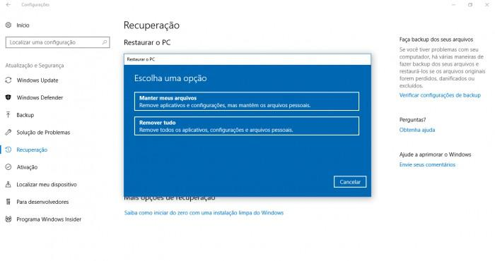
Menu de recuperação do Windows 10 — O processo de restauração é equivalente ao do Windows 11.
Definindo a Opção de Arquivos (Manter vs Remover)
Tanto no Windows 10 quanto no Windows 11, ao iniciar a restauração, o assistente perguntará qual estratégia você deseja seguir:

Janela de escolha entre "Manter meus arquivos" e "Remover tudo".
- "Manter meus arquivos" (Recomendado): Remove todos os programas instalados e restaura as configurações do sistema, mas PRESERVA todos os seus documentos, fotos, PDFs e arquivos pessoais.
- "Remover tudo": Apaga completamente todos os arquivos, documentos, contas de usuário e programas, deixando o computador como novo de fábrica.
Em seguida, você pode escolher se prefere reinstalar o Windows através de Download da Nuvem (baixa os arquivos atualizados diretamente da Microsoft) ou Reinstalação Local (utiliza a imagem gravada no próprio disco).
3. Restauração por Ponto de Restauração (Painel de Controle e Comando rstrui)
Além da restauração padrão que reinstala o sistema, o Windows conta com o recurso de Ponto de Restauração. Esse recurso salva o "estado" do computador em datas específicas. Se a máquina apresentar um problema após instalar um programa ou atualização, você pode voltar o relógio do sistema para uma data anterior em que tudo funcionava perfeitamente, sem afetar seus documentos recentes.
3.1 Acessando via Painel de Controle (Windows 7 / 10 / 11)
🖐️ Passo a Passo Prático no Painel de Controle
- Acesse o Painel de Controle no menu de busca do Windows.
- Acesse Sistema e Segurança > Central de Ações (ou Recuperação).
- Clique no link "Restaurar um estado anterior do computador" e selecione "Abrir Restauração de Sistema".
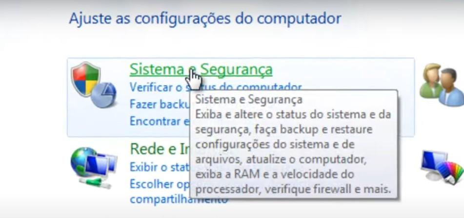
Acessando a seção Sistema e Segurança no Painel de Controle.

Opção "Restaurar um estado anterior do computador" na Central de Ações / Recuperação.
3.2 O Assistente de Restauração do Sistema
Ao abrir o assistente, clique em Avançar para visualizar a lista de pontos de restauração salvos automaticamente pelo sistema ou criados antes de atualizações:
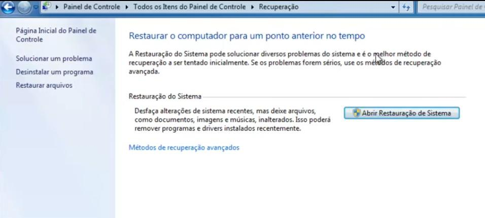
Tela inicial do assistente nativo de Restauração do Sistema.
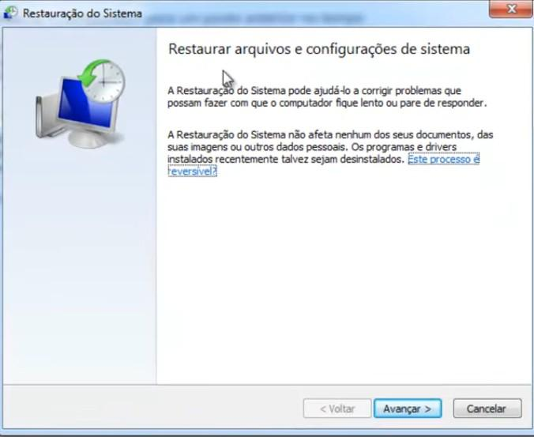
Avançando para a tela de seleção de datas.

Escolha o ponto de restauração com base na data e hora em que o computador funcionava corretamente.
Você pode abrir diretamente o assistente de Restauração do Sistema em qualquer versão do Windows sem navegar pelos menus:
1. Pressione Win + R para abrir a janela Executar (ou abra o Prompt de Comando
cmd).2. Digite exatamente rstrui e pressione Enter!
Reversão ("Desfazer"): Caso o ponto de restauração escolhido não resolva o problema ou piore a situação, você pode desfazer a alteração! Abra o assistente novamente e selecione o ponto do tipo "Desfazer".
4. Criando Pendrive de Instalação do Windows (10 e 11)
Criar um Pendrive de Instalação (mídia de boot) permite formatar e instalar o Windows em qualquer computador, mesmo que a máquina antiga não consiga mais ligar.
4.1 O que você vai precisar:
| Item Necessário | Especificação Recomendada |
|---|---|
| 🖥️ Computador | Com conexão à internet estável (download de 4GB a 6GB). |
| 💾 Pendrive | Vazio, com no mínimo 8 GB de espaço livre. |
| ⏱️ Tempo | De 20 minutos a 1 hora (depende da velocidade da internet). |
| 🔑 Chave do Produto | Opcional — Não necessária se o PC tiver licença digital. |
4.2 Baixando a Ferramenta Oficial (Media Creation Tool)
Acesse o site oficial da Microsoft de acordo com a versão desejada:
🌐 Windows 10: microsoft.com/pt-br/software-download/windows10ISO
🌐 Windows 11: microsoft.com/pt-br/software-download/windows11
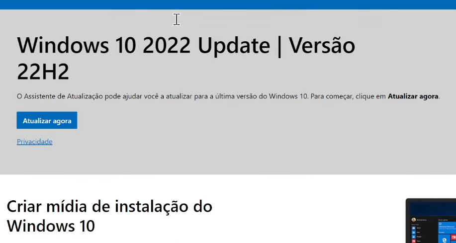
Página oficial da Microsoft para download do Windows 10.

Clique no botão "Baixar Agora" na seção "Criar mídia de instalação do Windows 10".

Página oficial da Microsoft para download do Assistente do Windows 11.
4.3 Executando o Assistente Passo a Passo
🖐️ Passo a Passo da Criação da Mídia USB
- Localize o instalador: Abra a pasta Downloads e encontre o arquivo
MediaCreationTool.exe. - Executar como administrador: Clique com o botão direito do mouse no arquivo e selecione "Executar como administrador".
- Termos de licença: Clique no botão "Aceitar".
- O que você deseja fazer?: Marque a opção "Criar mídia de instalação (pen drive, DVD ou arquivo ISO)" e avance.
- Idioma e Arquitetura: Escolha o idioma (Português Brasil) e a Arquitetura (64 bits ou 32 bits). Ou mantenha a caixa "Usar as opções recomendadas" marcada.
- Tipo de Mídia: Selecione a opção "Unidade flash USB".
- Selecione o Pendrive: Conecte o pendrive na entrada USB do PC, selecione-o na lista e clique em Avançar.
- Aguarde o Download e Criação: O assistente baixará os arquivos e criará o pendrive inicializável automaticamente.

1. Arquivo MediaCreationTool.exe em Downloads.
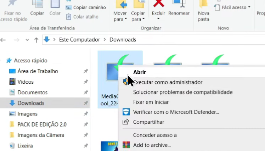
2. Executando como administrador.

3. Aceitando os termos de licença.
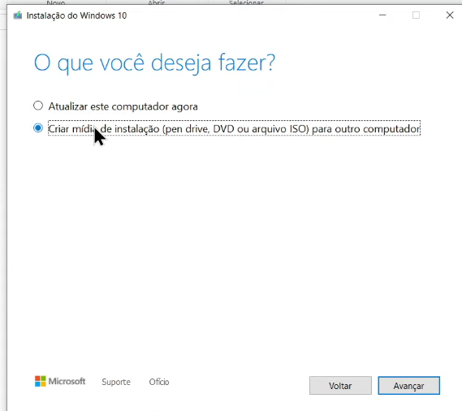
4. Selecionando criar mídia USB.
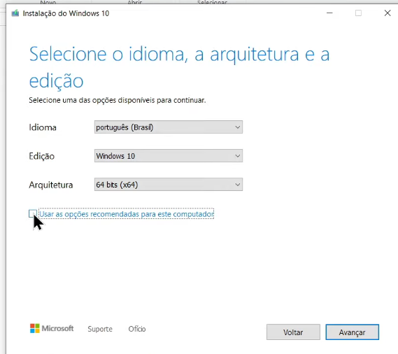
5. Seleção de Idioma e Arquitetura.

5b. Opções recomendadas ativas.
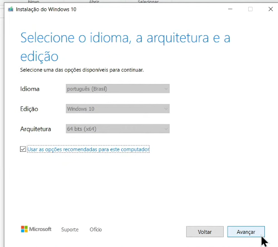
6. Selecionando Unidade flash USB.
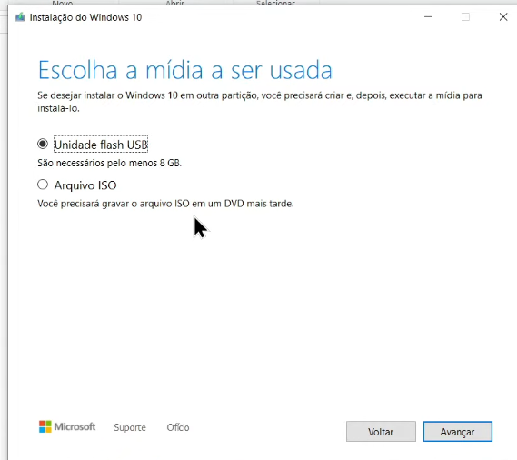
6b. Confirmação da escolha USB.

7. Selecionando a letra do Pendrive.
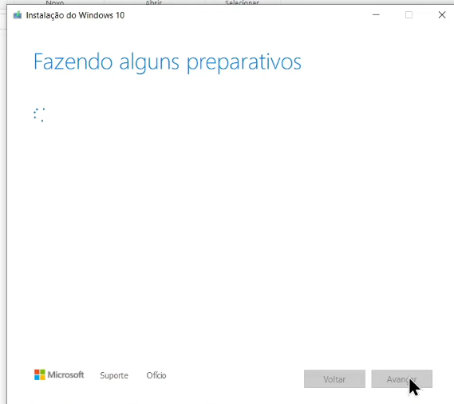
8a. Fazendo preparativos.

8b. Baixando arquivos da Microsoft.

9. Mídia pronta para instalação!
5. Se der Erro: Como Formatar o Pendrive em FAT32
Em alguns casos, a ferramenta da Microsoft pode apresentar mensagem de erro ao tentar gravar no pendrive (caso a unidade contenha partições antigas ou sistema de arquivos incompatível). Para resolver, basta formatar o pendrive previamente!
🖐️ Passo a Passo da Formatação no Explorador de Arquivos
- Pressione Win + E para abrir o Explorador de Arquivos.
- Localize o ícone do Pendrive em "Este Computador".
- Clique com o botão direito do mouse sobre o pendrive.
- Clique na opção "Formatar...".
- No campo Sistema de arquivos, selecione FAT32 (Padrão).
- Mantenha a opção "Formatação Rápida" marcada e clique em Iniciar.

Menu de contexto acessado com o botão direito sobre a unidade USB.
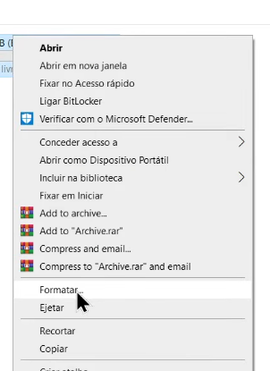
Selecionando a opção "Formatar...".
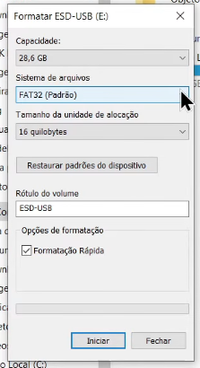
Janela de formatação ajustada para o padrão FAT32.
A formatação APAGA todos os arquivos e dados salvos no pendrive de forma imediata e irreversível! Certifique-se de não possuir documentos pessoais gravados na unidade antes de clicar em Iniciar.
Exercício de Fixação — Aula 8
Abriremos o e-mail preenchido para okcomputer.use.linux@gmail.com contendo sua Assinatura Digital.